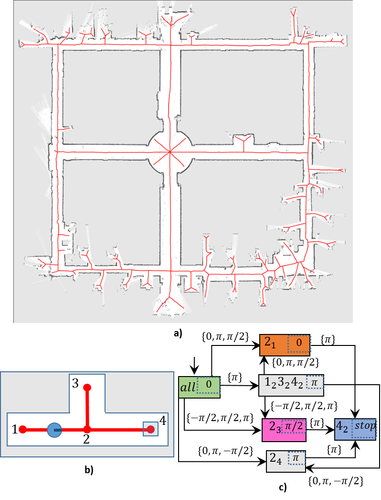

|  A map of the third floor of ACES building of University of Texas at Austin (P. Beeson, M. MacMahon, J. Modayil, A. Murarka, B. Kuipers, and B. Stankiewicz, "Integrating multiple representations of spatial knowl-edge for mapping, navigation, and communication." in Interaction Challenges for Intelligent Assistants, 2007, pp. 1-9.). The map is overlaid with the generalized Voronoi graph (GVG) of the environment in red. A simple environment and its GVG for illustrating how a combinatorial filter can be used as a plan to reach a goal location from full location uncertainty. A naively-constructed combinatorial filter, which the robot can use to navigate through the environment in part b) to reach point 3, starting from full location uncertainty. |